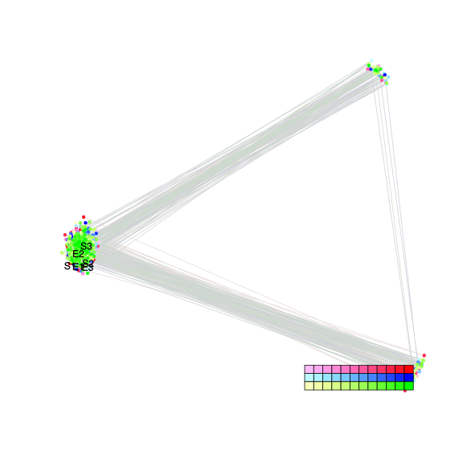
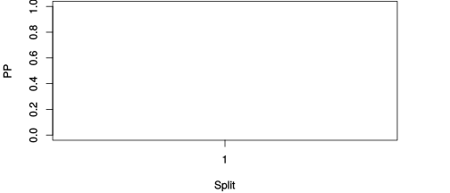

| chain # | burnin | subsample | Iterations (remaining) | command line | subdirectory | directory |
|---|---|---|---|---|---|---|
| 1 | 10000 | 1 | 90000 | bali-phy E7_AA_red3_Alpha.fas -s 23163 -n Alpha_c1 | Alpha_c1-1 | /DATA/work/ONCOGENEVOL/database/trees/Bali-Phy/red3/E7 |
| 2 | 10000 | 1 | 90000 | bali-phy E7_AA_red3_Alpha.fas -s 56463 -n Alpha_c2 | Alpha_c2-1 | /DATA/work/ONCOGENEVOL/database/trees/Bali-Phy/red3/E7 |
| 3 | 10000 | 1 | 90000 | bali-phy E7_AA_red3_Alpha.fas -s 98432 -n Alpha_c3 | Alpha_c3-1 | /DATA/work/ONCOGENEVOL/database/trees/Bali-Phy/red3/E7 |
| P(data|M) = -916.087 +- 0.110 | Complete sample: 3 topologies | 95% Bayesian credible interval: 3 topologies |
Phylogeny Distribution

| Partition support: Summary |
| Partition support graph: SVG |
{kind=link}
| 50% consensus | Newick (+PP) | SVG | |||||
| 66% consensus | Newick (+PP) | SVG | |||||
| 80% consensus | Newick (+PP) | SVG | |||||
| 90% consensus | Newick (+PP) | SVG | |||||
| 95% consensus | Newick (+PP) | SVG | |||||
| 99% consensus | Newick (+PP) | SVG | |||||
| 100% consensus | Newick (+PP) | SVG | |||||
| MAP | Newick (+PP) | SVG | |||||
| greedy | Newick (+PP) | SVG |
{kind=link}
{kind=link}
{kind=link}
{kind=link}
{kind=link}
{kind=link}
{kind=link}
{kind=link}
Alignment Distribution
Partition 1
| Diff | Min. %identity | # Sites | Constant | Informative | ||||
|---|---|---|---|---|---|---|---|---|
| Initial | FASTA | HTML | Diff | 11.4% | 110 | 7 (6.36%) | 5 (4.55%) | |
| Best (WPD) | FASTA | HTML | AU | 29.5% | 140 | 24 (17.1%) | 2 (1.43%) |
Mixing
{kind=link}
{kind=link}
| burnin (scalar) | ESS (scalar) | ESS (partition) | ASDSF | MSDSF | PSRF-CI80% | PSRF-RCF |
|---|---|---|---|---|---|---|
| 793 | 9713 | 139246.369 | 0.002 | 0.002 | 1 | 1.006 |
Projection of RF distances for the first 3 chains3D | Variation of split PPs across chainsNot generated: multiple chains needed. |
Scalar variables
| Statistic | Median | 95% BCI | ACT | ESS | burnin | PSRF-CI80% | PSRF-RCF |
|---|---|---|---|---|---|---|---|
| prior | -110.8 | (-135.6, -91.63) | 23.69 | 11397 | 432 | 1 | 0.9989 |
| prior_A1 | -84.98 | (-107, -69.02) | 7.96 | 33919 | 164 | 0.9997 | 0.9972 |
| likelihood | -903.8 | (-917.2, -890.9) | 5.017 | 53819 | 160 | 0.9996 | 0.9969 |
| logp | -1015 | (-1037, -997.3) | 27.8 | 9712 | 315 | 1 | 0.9998 |
| Heat.beta | 1 | ||||||
| Scale1 | 1.829 | (0.5134, 4.454) | 1.02 | 264647 | 167 | 1 | 1.001 |
| S1.F.pi.A | 0.04379 | (0.02336, 0.06832) | 8.296 | 32547 | 386 | 1 | 0.9978 |
| S1.F.pi.R | 0.05412 | (0.02946, 0.08248) | 7.636 | 35358 | 240 | 1 | 0.9938 |
| S1.F.pi.N | 0.0293 | (0.01316, 0.04876) | 8.189 | 32973 | 266 | 0.9998 | 0.996 |
| S1.F.pi.D | 0.09318 | (0.05983, 0.1296) | 7.817 | 34540 | 317 | 1 | 1.002 |
| S1.F.pi.C | 0.06141 | (0.03235, 0.0955) | 7.835 | 34461 | 466 | 0.9999 | 1 |
| S1.F.pi.Q | 0.06358 | (0.03847, 0.09157) | 8.216 | 32864 | 448 | 1 | 0.999 |
| S1.F.pi.E | 0.09933 | (0.06819, 0.1332) | 7.844 | 34423 | 309 | 1 | 0.9993 |
| S1.F.pi.G | 0.03334 | (0.01307, 0.05823) | 8.386 | 32195 | 402 | 0.9995 | 1.001 |
| S1.F.pi.H | 0.03788 | (0.01849, 0.06208) | 7.887 | 34233 | 609 | 1 | 1.006 |
| S1.F.pi.I | 0.03957 | (0.02072, 0.06126) | 8.077 | 33428 | 256 | 1 | 1.001 |
| S1.F.pi.L | 0.09772 | (0.06366, 0.1363) | 7.762 | 34784 | 150 | 0.9999 | 1.003 |
| S1.F.pi.K | 0.02436 | (0.009788, 0.0433) | 8.273 | 32635 | 371 | 0.9997 | 0.9971 |
| S1.F.pi.M | 0.0158 | (0.004961, 0.03018) | 8.362 | 32288 | 445 | 1 | 0.9991 |
| S1.F.pi.F | 0.01785 | (0.004488, 0.03561) | 8.508 | 31735 | 793 | 0.9998 | 0.9958 |
| S1.F.pi.P | 0.05215 | (0.02706, 0.08214) | 8.133 | 33198 | 550 | 0.9996 | 0.9991 |
| S1.F.pi.S | 0.05142 | (0.02868, 0.07812) | 7.867 | 34322 | 447 | 0.9995 | 1.005 |
| S1.F.pi.T | 0.06804 | (0.04114, 0.0985) | 7.749 | 34845 | 433 | 1 | 0.9944 |
| S1.F.pi.W | 0.007367 | (0.0001742, 0.02055) | 10.24 | 26358 | 502 | 0.9997 | 1.006 |
| S1.F.pi.Y | 0.03202 | (0.01262, 0.05622) | 7.904 | 34160 | 463 | 1 | 0.9958 |
| S1.F.pi.V | 0.05654 | (0.03188, 0.0846) | 9.056 | 29813 | 337 | 0.9999 | 0.9983 |
| I1.RS07.meanIndelLengthMinus1 | 4.3 | (1.661, 8.638) | 4.925 | 54818 | 111 | 1 | 0.9983 |
| I1.RS07.logLambda | -3.632 | (-4.294, -2.916) | 2.535 | 106512 | 89 | 1 | 0.9989 |
| |A1| | 138 | (130, 147) | 26.27 | 10279 | 399 | 0.9167 | 1.001 |
| #indels1 | 11 | (9, 15) | 6.093 | 44316 | 164 | 0.75 | 1 |
| |indels1| | 53 | (41, 73) | 19.38 | 13932 | 335 | 0.9545 | 0.9997 |
| #substs1 | 126 | (118, 133) | 20.3 | 13298 | 280 | 0.9 | 1 |
| Scale1*|T| | 2.014 | (1.606, 2.46) | 2.62 | 103043 | 92 | 1 | 0.9982 |
| |A| | 138 | (130, 147) | 26.27 | 10279 | 399 | 0.9167 | 1.001 |
| #indels | 11 | (9, 15) | 6.093 | 44316 | 164 | 0.75 | 1 |
| |indels| | 53 | (41, 73) | 19.38 | 13932 | 335 | 0.9545 | 0.9997 |
| #substs | 126 | (118, 133) | 20.3 | 13298 | 280 | 0.9 | 1 |
| |T| | 1.104 | (0.2751, 2.437) | 1 | 269892 | 87 | 0.9996 | 1.002 |